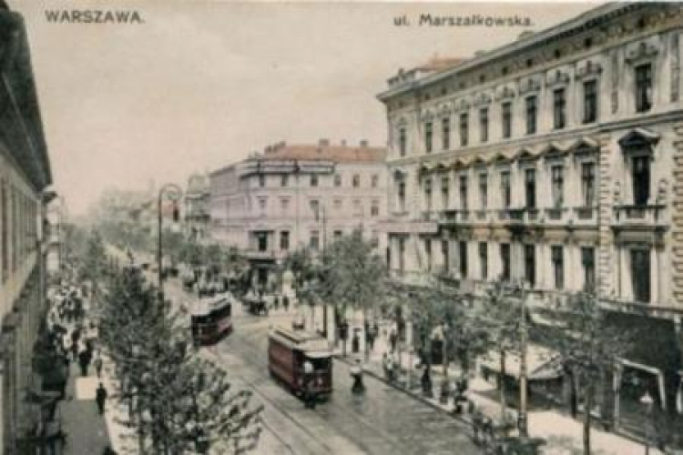

Kultura i Nauka Polski na przełomie &XIX i XX wieku
Kultura Polski "
Młoda Polska: Ruch artystyczny i literacki Młoda Polska był reakcją na trudności społeczne i polityczne związane z rozbiorami Polski. Charakteryzował się poszukiwaniem nowatorskich form artystycznych, eksperymentami ze stylem i dążeniem do wyrażenia ducha narodowego.
Literatura: W literaturze dominowała praca twórców takich jak Stanisław Wyspiański, Władysław Reymont i Maria Konopnicka. "Wesele" Wyspiańskiego czy "Chłopi" Reymonta to arcydzieła, które ukazały różne oblicza polskiego społeczeństwa.
Sztuki Wizualne: Symbolizm i secesja były głównymi nurtami w malarstwie. Jacek Malczewski stał się ikoną tego okresu, łącząc symbolizm z patriotyzmem. Stanisław Wyspiański nie tylko był dramatopisarzem, ale również tworzył arcydzieła malarskie, wprowadzając nowe tendencje w sztuce polskiej.
Teatr: Teatr Młodej Polski, inspirowany symbolizmem, przyniósł innowacje sceniczne. Wyspiański, działając jako dramaturg i scenograf, wprowadził nowatorskie koncepcje w sztuce teatralnej, widoczne szczególnie w "Weselu".
Nauka a Sztuka: Maria Skłodowska-Curie, choć związana głównie z nauką, była również ikoną kultury. Jej osiągnięcia w dziedzinie fizyki i chemii przyniosły Polsce światową sławę. Władysław Reymont, oprócz zasług literackich, zdobył uznanie jako lekarz, a jego badania nad hormonami tarczycy przyniosły mu Nagrodę Nobla w dziedzinie medycyny.
Dziedzictwo Kulturowe: Okres ten pozostawił trwałe dziedzictwo w postaci kulturowej tożsamości Polski. Młoda Polska wpłynęła na rozwój sztuk, literatury, teatru i nauki, stanowiąc fundament dla późniejszych kierunków artystycznych. Współcześnie, ten okres nadal inspiruje artystów i stanowi ważny element dziedzictwa kulturowego Polski.
Poeci i działaczy Polscy "
Adam Asnyk (1838–1897): Poeta, dramatopisarz i filozof, znany z lirycznych wierszy poruszających tematy społeczne i egzystencjalne. Jego prace, takie jak "Ulepione z kuli ziemskiej" czy "Ciemne Ścieżki", ukazują refleksyjny i krytyczny stosunek do ówczesnej rzeczywistości.
Leopold Staff (1878–1957): Poeta symbolista, twórca pełen melancholii i tęsknoty za utraconą wolnością. Jego najważniejszy cykl to "Deszcz jesienny", w którym skupił się na atmosferze niepodległościowej Polski.
Bolesław Leśmian (1877–1937): Twórca poezji surrealistycznej, zabawiający się słowem i obrazem. Jego zbiory "Łąka" i "Napój cienisty" wprowadziły nowe style i formy w polskiej poezji.
Maria Konopnicka (1842–1910): Pisarka, poetka i działaczka społeczna, która angażowała się w walkę o prawa kobiet. Jej patriotyczne wiersze, takie jak "Rota", stały się hymnem narodowym, a prace dla dzieci, jak "O krasnoludkach i sierotce Marysi", miały duży wpływ na literaturę dziecięcą.
Władysław Reymont (1867–1925): Pisarz, laureat Nagrody Nobla w dziedzinie literatury za epicką sagę "Chłopi". Jego twórczość ukazywała trudną sytuację społeczną w Polsce, a zwłaszcza na wsi.
Józef Piłsudski (1867–1935): Nie tylko polityk, ale także działacz niepodległościowy i autor pism filozoficznych. Jako przywódca Legionów Polskich odegrał kluczową rolę w odzyskaniu niepodległości przez Polskę w 1918 roku.
Eliza Orzeszkowa (1841–1910): Pisarka, twórczyni powieści społeczno-obyczajowych, działaczka społeczna. Jej prace, takie jak "Nad Niemnem", analizowały problemy społeczne i etyczne.
®Nauka Polski ©
Rozwój Systemu Edukacyjnego: Okres przełomu przyniósł rozwój systemu edukacyjnego w Polsce. Powstawały nowe uczelnie, a szczególnie Uniwersytet Jagielloński w Krakowie był ośrodkiem naukowym, gdzie rozwijała się polska myśl filozoficzna i społeczna.
Nauki Przyrodnicze: Polska przyczyniła się do postępu w naukach przyrodniczych. Ignacy Paderewski, nie tylko znany jako pianista i kompozytor, ale także jako polityk, zdobył uznanie za swoje badania naukowe. Maria Skłodowska-Curie, dwukrotna laureatka Nagrody Nobla, dokonała przełomu w dziedzinie fizyki i chemii, stając się jednym z najważniejszych naukowców swojego czasu.
Medycyna i Badania Władysława Reymonta: W dziedzinie medycyny, Władysław Reymont, laureat Nagrody Nobla w dziedzinie literatury, był również uznanym lekarzem. Jego badania nad hormonami tarczycy przyniosły mu uznanie w świecie nauki medycznej.
Eksploracje Geograficzne Pawła Strzeleckiego: Paweł Strzelecki, geograf, geolog i podróżnik, przyczynił się do rozwinięcia nauk geograficznych poprzez swoje badania w Australii i Nowej Zelandii. Jego prace geologiczne i geograficzne, zwłaszcza na obszarze Gór Australijskich, pozostają ważnym wkładem w nauki przyrodnicze.
Interdyscyplinarność: Okres ten charakteryzowała interdyscyplinarność badań. Naukowcy, tacy jak Strzelecki, nie ograniczali się do jednej dziedziny, ale łączyli różne aspekty w swoich badaniach. Ta interdyscyplinarność miała wpływ na rozwój nauk przyrodniczych i zacieśniła powiązania między różnymi dziedzinami wiedzy.
Dziedzictwo Naukowe: Nauka Polski na przełomie XIX i XX wieku pozostawiła trwałe dziedzictwo. Osiągnięcia naukowe tamtego okresu miały wpływ na rozwój naukowych instytucji i postaw społeczeństwa wobec edukacji i badań naukowych. Dziedzictwo naukowe tych czasów kontynuuje się, a postacie takie jak Maria Skłodowska-Curie są nadal symbolem polskiego wkładu w świat nauki.
®Polscy Naukowcy ©
Maria Skłodowska-Curie (1867–1934): Dwa razy laureatka Nagrody Nobla – w fizyce w 1903 roku (razem z mężem Pierre'em Curie i Henri Becquerel za badania nad promieniotwórczością) oraz w chemii w 1911 roku (za izolację radu i polonu). Była pierwszą kobietą, która zdobyła Nagrodę Nobla i jedyną osobą, która otrzymała ją w dwóch różnych dziedzinach nauki.
Ignacy Paderewski (1860–1941): Pomimo sławy jako pianista i kompozytor, Paderewski również angażował się w naukę i politykę. Jako polityk odegrał kluczową rolę w traktacie wersalskim, reprezentując Polskę. Był także zaangażowany w rozwój naukowy.
Paweł Edmund Strzelecki (1797–1873): Geograf, geolog i podróżnik, który w okresie przed rokiem 1900 przeprowadził znaczące badania geograficzne w Australii i Nowej Zelandii. Dokonał odkrycia i nazwał Góry Australijskie oraz był jednym z pierwszych, którzy zdobyli najwyższy szczyt tego obszaru – Mount Kosciuszko.
Władysław Reymont (1867–1925): Laureat Nagrody Nobla w dziedzinie literatury w 1924 roku za epicką sagę "Chłopi". Oprócz pisarstwa, Reymont był również z wykształcenia lekarzem i prowadził badania naukowe, szczególnie w dziedzinie medycyny.
Stefan Banach (1892–1945): Współzałożyciel szkoły matematycznej nazwanej później szkołą lwowsko-warszawską. Jego prace w teorii funkcji, teorii mnogości i teorii miary odegrały kluczową rolę w rozwinięciu matematyki w Polsce i na świecie.